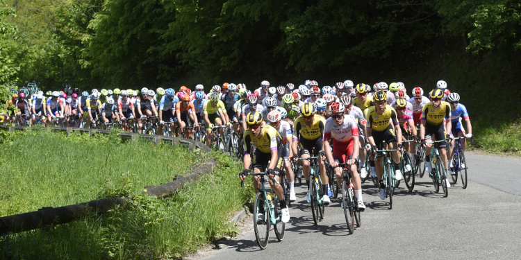

Course cyliste de mézières sur couesnon

Le Dimanche 22 mai 2022, le Team Cycliste Mezierais organisera sa course annuelle, pour la 9éme édition.
- A 13h30, les 5éme catégorie et minimes partiront pour 18 tours d'un circuit de 2,9km, soit un total de 52,2km et 11 tours, soit 31,8km pour les minimes.
- A 15h30, les 3éme et 4éme catégorie partiront à leur tour sur ce même circuit de 2,9km pour 24 tours, soit un total de 69,9km.
La remise des récompenses se fera à la fin des 2 courses, soit aux alentours de 17h30.
Le circuit de 2,9km se situe au niveau de l'église de Mezières sur Couesnon. Un parcours usant qui devrait permettre aux meilleurs de pouvoir s'exprimer. Les dossards seront à retirer à partir de 13h30.
Information :
Deux départ sont prévus :- A 13h30, les 5éme catégorie et minimes partiront pour 18 tours d'un circuit de 2,9km, soit un total de 52,2km et 11 tours, soit 31,8km pour les minimes.
- A 15h30, les 3éme et 4éme catégorie partiront à leur tour sur ce même circuit de 2,9km pour 24 tours, soit un total de 69,9km.
La remise des récompenses se fera à la fin des 2 courses, soit aux alentours de 17h30.
Le circuit de 2,9km se situe au niveau de l'église de Mezières sur Couesnon. Un parcours usant qui devrait permettre aux meilleurs de pouvoir s'exprimer. Les dossards seront à retirer à partir de 13h30.